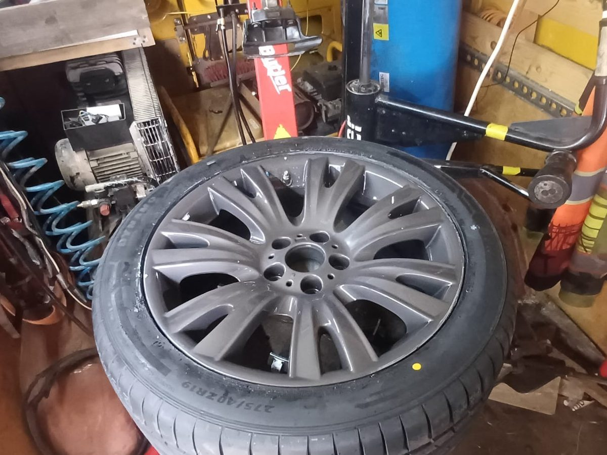

W skrócie: zatrzymaj się w bezpiecznym miejscu, nie wyciągaj gwoździa i nie jedź dalej na pustej oponie. Przebicie w środkowej części bieżnika zwykle da się naprawić. Uszkodzenia boku opony — nie.
Krok po kroku
- Zjedź bezpiecznie. Włącz światła awaryjne, zwolnij płynnie i zatrzymaj się poza pasem ruchu. Nie hamuj gwałtownie.
- Zadbaj o siebie. Załóż kamizelkę odblaskową i ustaw trójkąt ostrzegawczy. Na drodze szybkiego ruchu poczekaj na pomoc za barierką.
- Obejrzyj oponę. Szukaj gwoździa, wkrętu albo rozcięcia. Jeśli coś tkwi w oponie — zostaw to. Wyciągnięcie gwoździa zwykle zamienia powolny ubytek powietrza w szybki.
- Nie jedź na „kapciu”. Kilkaset metrów na pustej oponie potrafi zniszczyć jej bok od środka — wtedy naprawa przestaje być możliwa. Może też uszkodzić felgę.
- Zrób zdjęcie i zadzwoń. Wyślij nam zdjęcie uszkodzenia na WhatsApp — od razu powiemy, czy opona nadaje się do naprawy.
Kiedy oponę da się naprawić?
- Przebicie jest w środkowej części bieżnika, a nie przy krawędzi czy na boku
- Otwór jest niewielki — zwykle do ok. 6 mm (typowy gwóźdź lub wkręt)
- Auto nie przejechało dłuższego odcinka na pustej oponie
- Bieżnik ma jeszcze rozsądną głębokość, a opona nie jest bardzo stara
Kiedy trzeba wymienić oponę?
- Uszkodzenie na boku albo na barku opony (przejście bieżnika w bok)
- Rozcięcie, duża dziura, wybrzuszenie („bąbel”)
- Ślady jazdy na pustej oponie — przetarcia i rozwarstwienie wewnątrz
- Kilka przebić blisko siebie
Koło zapasowe, dojazdówka, zestaw naprawczy
Dojazdówka (wąskie koło zapasowe) służy tylko do dojazdu — zwykle z prędkością do 80 km/h, zgodnie z oznaczeniem na kole. Zestaw naprawczy z pianką pozwala dojechać, ale pianka brudzi oponę od środka i bywa, że utrudnia późniejszą profesjonalną naprawę. Najprościej: zadzwoń, a przyjedziemy z montażownicą na miejsce — także w nocy.
Potrzebujesz pomocy z oponami? Przyjedziemy pod dom, do pracy albo na parking — w Gdyni, Sopocie, Gdańsku i okolicach.